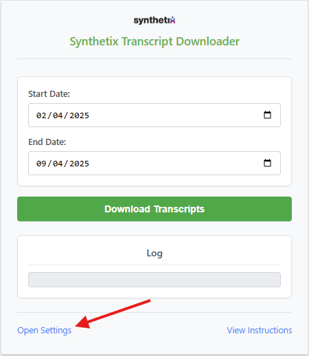
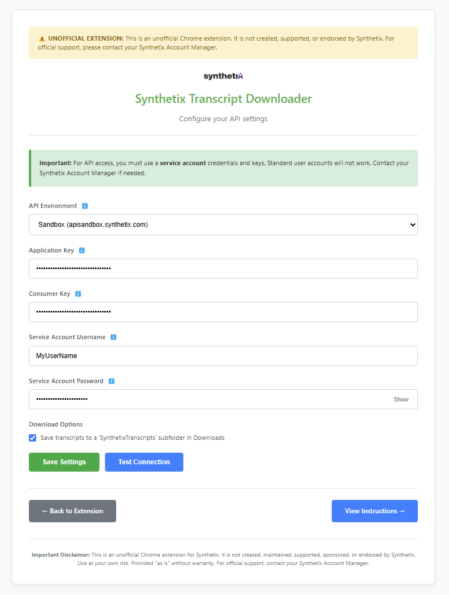
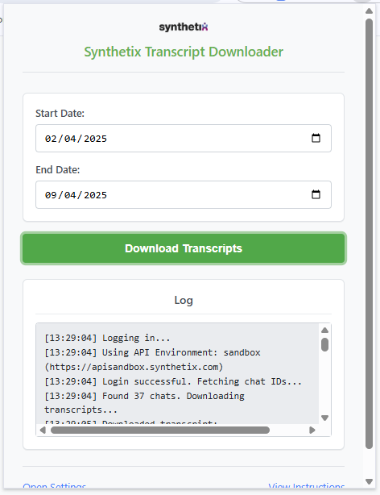

Welcome to Synthetix Transcript Downloader
Follow these simple steps to get started
1 Get Your API Keys & Service Account
You'll need API credentials from Synthetix, specifically for a service account:
- Application Key
- Consumer Key
- Service Account Username
- Service Account Password
Important: Standard user account credentials will not work for API access. You must use a dedicated service account.
How to acquire API keys:
- Contact your Synthetix Account Manager with a written request.
- Clearly describe the purpose of this unofficial downloader tool.
- Provide a name/description for the keys (e.g., "Unofficial Transcript Downloader Keys").
- Acknowledge the Synthetix API Terms of Use.
Environments: By default, new keys usually access the Sandbox environment (
apisandbox.synthetix.com). Production access (api.synthetix.com) requires review. Select the correct environment in the extension settings.
For more details, refer to the official Synthetix API Documentation.
2 Configure the Extension
Open the extension settings:
- Click the extension icon in your toolbar, then click "Open Settings" at the bottom.
- Alternatively, right-click the extension icon and select "Options".

Location of the "Open Settings" link in the popup.
In the settings page:
- Select the correct API Environment (Sandbox, Staging, or Production) matching your keys.
- Enter your Application Key and Consumer Key.
- Enter your Service Account Username and Password.
- Click Save Settings.

Fill in your credentials and select the environment on the settings page.
Remember: Credentials are stored locally on your browser. Use the "Show" button to temporarily view the password if needed.
3 Download Transcripts
Using the extension popup:
- Select the desired Start Date and End Date.
- Click the Download Transcripts button.

Select dates and click the download button in the popup.
The extension will log its progress:
- Attempting to log in using the configured settings and environment.
- Fetching chat IDs for the selected date range.
- Downloading each transcript as a JSON file.
- Reporting success or any errors encountered.
4 Troubleshooting
- Login Failed / Invalid Credentials: Double-check all keys, username, password, and selected API environment in settings. Ensure you are using Service Account details.
- No Transcripts Found: Verify the date range is correct and that chats exist during that period in the selected environment.
- Download Errors: Check the log in the popup for specific error messages. Ensure your network connection is stable.
- Extension Not Working After Update: Try reloading the extension from `chrome://extensions/`.
This is an unofficial tool. For issues related to API access, key validity, or Synthetix services, please contact your Synthetix Account Manager.
Important Disclaimer: This is an unofficial Chrome extension for Synthetix. It is not created, maintained, supported, sponsored, or endorsed by Synthetix. Use at your own risk. Provided "as is" without warranty. For official support, contact your Synthetix Account Manager.